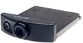

| eyemodule camera
One of the attractions of the Visor, has to be the springboard modules. What a totally neat idea. The first modules released though, weren't really that interesting to me. The eyemodule on the other hand, was a really cool concept. So, I own one of the original eyemodule cameras (there are two kinds now). It's very small, and adds very little size or weight to the Visor. The images it takes are pretty good for something so small, but you're not going to want to throw away your proper camera and rely on this. It loves bright light conditions. If you would consider using a flash on your normal camera, don't even try with the eyemodule. The images may look okay on the screen, but they'll probably turn out speckly. But, in the right conditions, it works well, and can produce some great pictures. The original eyemodule cameras can take three formats of pictures, small black and white - 120 x 160 pixels, large black and white - 240 x 320 and large colour - 240 x 320. The small black and white ones take about 9k of memory, the large black and white ones take around 40K and the colour ones around 180k. So, you can fit quite a lot of pictures into an 8MB visor. When we were on holiday in New Zealand, I had around 250 pictures in there, mostly little black and whites, but with 10 or so colour ones too. The eyemodule 2 cameras can take short video clips too, these use up more memory obviously, and if using a colour visor then the film will be colour, otherwise it'll be black and white (sounds strange, but that's how it seems to be). So, will I be trading my eyemodule 1 in for a 2? Not yet. I'm happy with the camera I have, and maybe the 3 will be even cooler. |
 Purchase from: Amazon Related Links:
|
|
Back to index page |